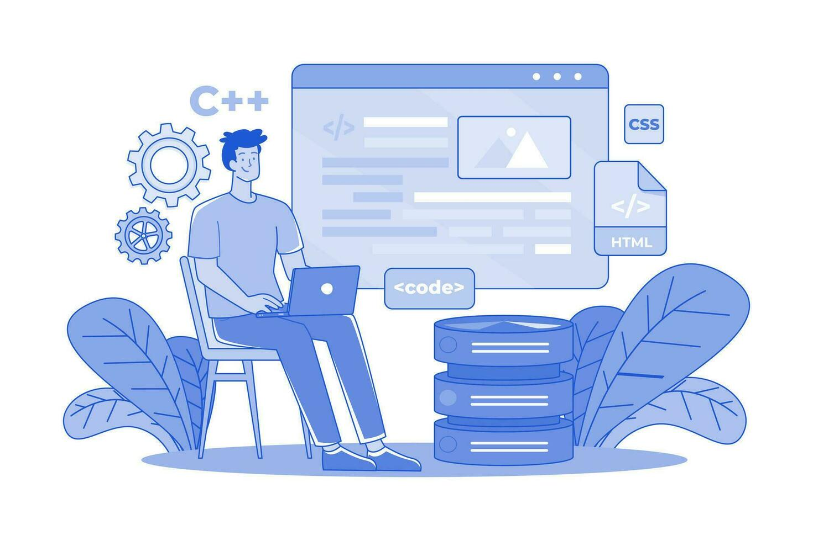
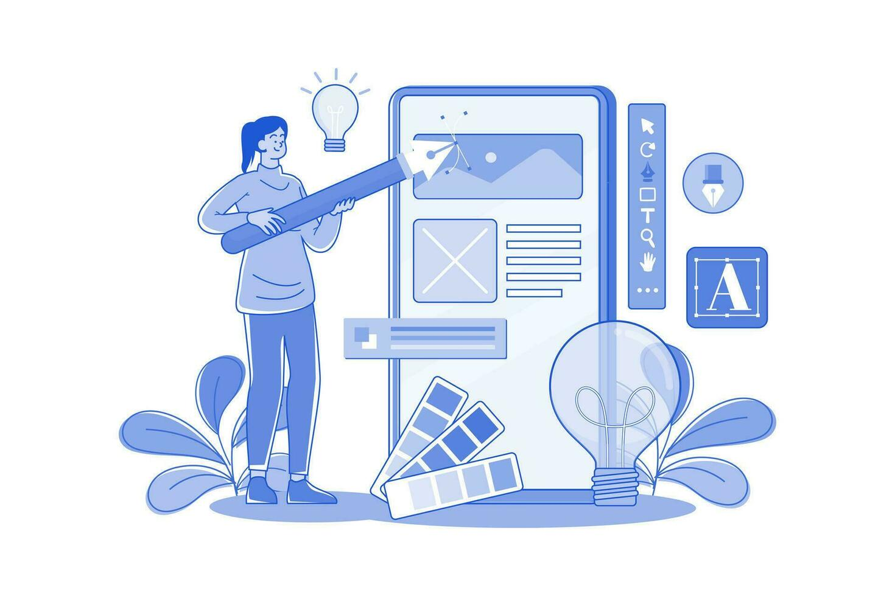

Mes différents projets

Refontes Sites Web
Au cours de cette année d'étude, j'ai plusieurs projets à réaliser qui consiste à refaire un site web de A à Z. Cela me permet d'apprendre davantage les différents langages de programmation ainsi que de développer une autonomie et rigueur régulière dans mon travail. Ci-dessous vous retrouverez un des projet qui est en cours de réalisation.

Web Design
Le Web Design me passionne, en effet il est essentiel car il façonne la première impression d'un site web et influe directement sur l'expérience de l'utilisateur. Une conception esthétiquement agréable et fonctionnelle augmente l'attrait du site, encourage l'exploration du contenu et renforce la crédibilité de la marque. Le bouton "Télécharger PDF" vous permettra d'aller jeter un oeil à un projet de site "One Page" que j'ai réalisé pour un devoir en graphisme.

Autres Projets
Durant mon temps libre, je m'entraîne à coder des applications, des pages web etc afin d'approfondir mes connaissances. Dernièrement j'ai réalisé une application météo que vous pouvez la retrouver en cliquant sur le bouton ci-dessous.